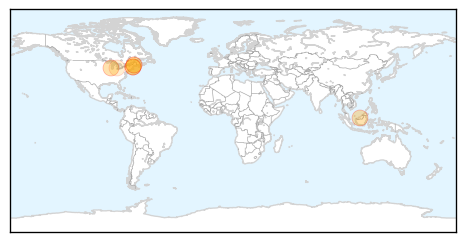
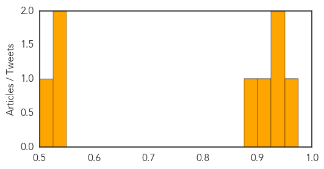
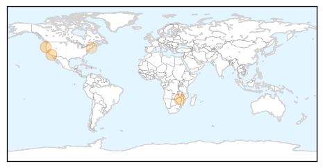

Meningitis
30-Day Web Trend
0 alerts, 0 warnings

30-Day Twitter Trend
0 alerts, 0 warnings

Article Locations
Article Confidences
Top Articles:
- 0.953
- District notifies parents of confirmed case of viral meningitis in Green Bay
- 0.945
- With 4 meningitis cases confirmed, RSU 57 takes precautions against spread of virus
- 0.939
- Newcastle, Sunderland and Durham students urged to get meningitis vaccination
- 0.920
- Case of viral meningitis confirmed at Saco Middle School
- 0.897
- Saco student diagnosed with viral meningitis
- 0.540
- Swartz Creek School District dealing with second meningitis case
- 0.527
- Prashant Mahajan awarded $5.76 million grant to study how febrile infants can avoid invasive procedures
- 0.500
- Meningitis case confirmed at Saco Middle School — Health — Bangor Daily News — BDN Maine
Top Tweets:
-
No tweets found for Sep 23, 2015
West Nile Virus
30-Day Web Trend
0 alerts, 0 warnings

30-Day Twitter Trend
1 alerts, 0 warnings

Article Locations
Article Confidences

Top Articles:
Top Tweets:
-
No tweets found for Sep 23, 2015